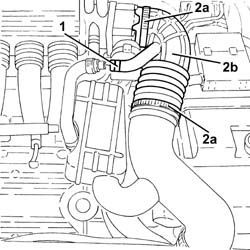

1048A48 THROTTLE HEATER SLEEVE - R R
- Path
- Procedures > 10 ENGINE UNIT > 1048 ENGINE AIR SUPPLY CIRCUIT > 1048A VACUUM AIR CIRCUIT > 1048A48 THROTTLE HEATER SLEEVE - R R
- Kind
- repair procedure (removal / refitting; the operation number is the code)
- Applies to
- engines: 3.2 V6; all production periods
- Interactive page
- https://sloeber94.github.io/elrnDB-aGt/en/#/125001019
Applies to: engines: 3.2 V6; all production periods
 Removing
Removing
 Refitting
Refitting1. Loosen the band and disconnect the oil vapour recovery pipe from the hose.
2. Loosen the bands (2a) and remove the hose between resonator and throttle body (2b).

Applies to: engines: 3.2 V6; all production periods
Refitting
RemovingPlace the hose between the resonator and the throttle casing back in its housing and secure it using the bands.
Connect the oil vapour recovery pipe to the hose and tighten the band.
Topics that link to this page (11)
- 1004B10 POWER UNIT WITH MANUAL GEARBOX - R + R
- 1016D20 LEFT CYLINDER HEAD – R.R. AND REPLACING GASKET
- 1020D38 FLYWHEEL SIDE OIL SEAL - REPLACE
- 1020D51 CRANK SHAFT REAR MOUNT - APPLY SILICONE TO MATING SURFACES
- 1024B10 ENGINE FLYWHEEL - R + R FOR VERSIONS WITH MANUAL GEARBOX
- 1056B17 THROTTLE BODY INTERGRAL WITH DVL - R R
- 1088B20 ENGINE COOLING RADIATOR - R + R
- 1810A20 CLUTCH - R + R
- 1820A24 THRUST BEARING LINKAGE - R + R
- 2110A10 MANUAL GEARBOX AND DIFFERENTIAL - R + R
- 2110C22 GEAR INPUT SHAFT SEALS - R R